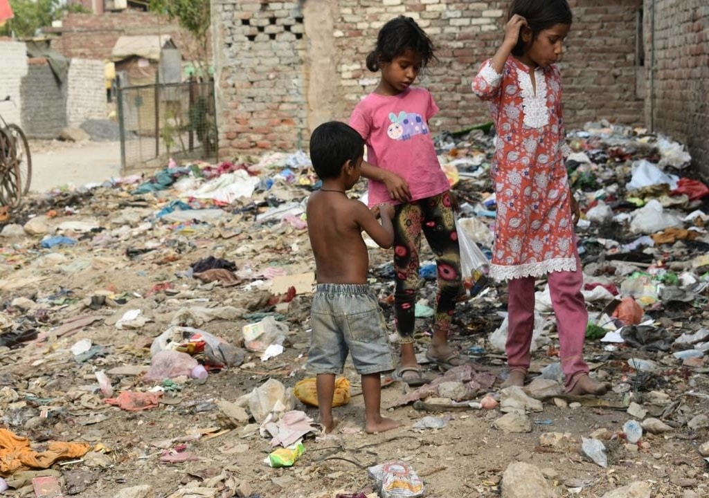
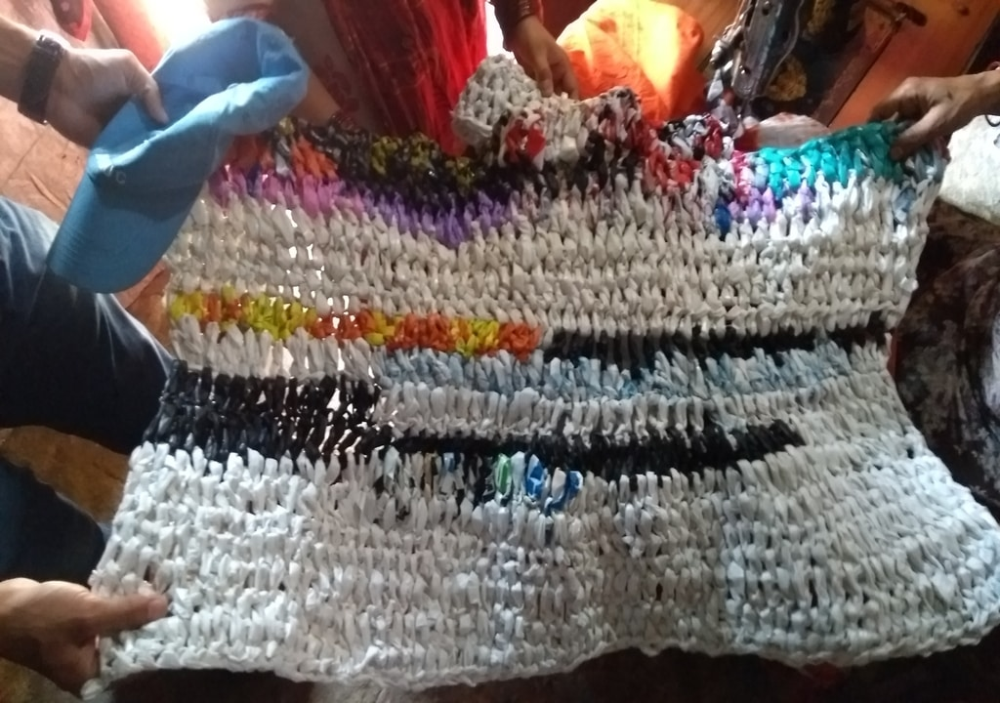

Enactus Jamia Millia Islamia’s flagship project, “Tabdeel” standing true to its name aims at delivering a revolutionary change concerning two of India’s major problems namely waste management and welfare of underprivileged communities.
THE WASTE REVOLUTION
Tabdeel focuses on creating means of self sustained livelihood through the ropes of successful waste management. Biodegradable waste is utilised in composting pits to generate minimum waste reduction and in turn utilising that converted waste as organic fertilizers. In the case of non biodegradable wastes, steps have been taken to make use of shredding machines to reduce the size of the waste generated and in turn re using it into an assortment of other marketable products.
OVERVIEW
To actualize the idea of ‘Zero Waste’, Enactus JMI decided to build contact with two nearby communities. Enactus JMI started with educating the rag pickers in our neighboring areas and those working within our university about the importance of segregating waste. For our business model, this segregated waste was developed into products that turned out providing entrepreneurial opportunity to another community namely the Sambhal women who reside in the locality of Batla House and are skilled in the art of crochet. The Sambhal women were also guided on proper waste management and its segregation by the Horticulture Department of Jamia Millia Islamia by the use of composting pits to help deal with biodegradable waste. Also, Enactus JMI held computer sessions for the children the rag picker community and the sambhal community to impart the basic knowledge of computers and its importance in today’s world.
GOALS
MEANS OF EMPOWERMENT
CONCERNS
Social
Economical
Environmental